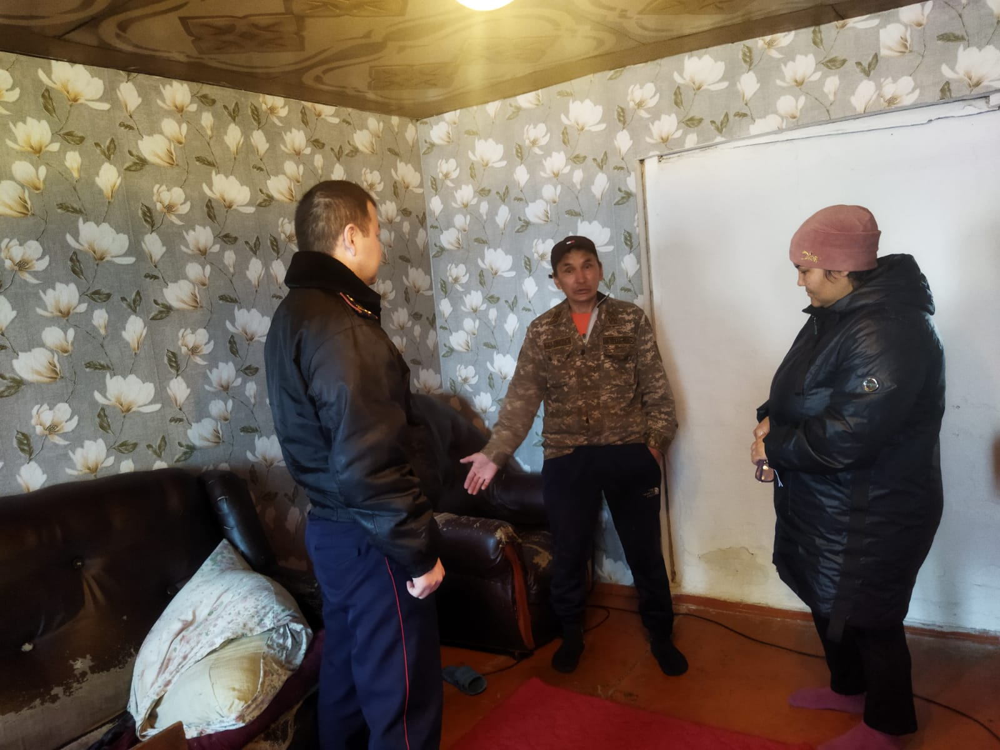
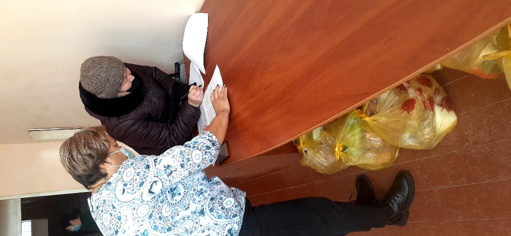

.jpg)
«Қайырымдылық жасасаң, қайырымын өзің көресің»- деген екен дана халық. Қайырымдылық – адамның бойындағы ең жағымды қасиеттердің бірі. Ондай адам рухани құндылықтарды материалдық құндылықтардан жоғары қояды. Өзінің жанашырлығымен және таза ниетімен ерекшеленеді. Мұқтаж адамдардың қажеттіліктеріне немқұрайлы қарамай, оларға барынша көмек көрсетуге тырысады. Мен, жомарттық қасиеті бар тұлғаларды ұнатамын. Олар адамдармен тек материалдық құндылықтарымен ғана емес, сонымен бірге жан дүниесінің байлығымен де бөліседі. Жомарт адам жақсы істерді көпшіліктің алғысын алу үшін жасамайды, ол мұқтаждарды кішкене болса да бақытты еткісі келеді. «Жанашырлыққа – жан риза» дегендей көмек қажет отбасы балаларына жанашыр қамқоршысы болып, аялы алақанын тосып, жүрек жылуын ұсыну , жомарт азаматтардың қолынан келер іс деп ойлаймын. Мектебімізде «Мектепке жол» қайырымдылық акциясы дәстүрлі түрде жыл сайын жалпы оқумен қамту айлығы аясында өткізіледі. Әлеуметтік көмекті қажет ететін отбасы балаларына көмек беріп, қолдау көрсеткен жанашыр жандарға алғысымыз шексіз.
.jpg)
Балаларға қатігездік пен және немқұрайлықпен қарау мәселесіне қоғамның назарын аудару және қоғамдағы зорлық-зомбылықты бодырмау, әлеуметтік мәртебесіне қарамастан әр адамның өмірі мен әл-ауқаты жоғары болатынына деген сенімдерді қалыптастыру мақсатында мектепте көптеген жұмыстар жүргізілді. Кәмелетке толмағандар арасында қадағалаусыз және панасыз қалудың алдын алу бойынша «Жасөспірім және көше», «Отбасы және бала құқығы» т.б. рейд жұмыстары жүргізілді. Алдағы уақытта да отбасыларға бақылау жасау жұмыстары жалғасын табады. Зорлық-зомбылықтын алдын алу және балалар құқығын қорғау – егемен еліміздің басты құндылықтарының бірі. Сол үшін өскелең ұрпақтың дұрыс тәрбие алып, қоғамдағы құқықтарының сақталу жолында аянбай еңбек етуі керек. «Балалардың өмір сапасын жақсарту – ертеңгі болашақтың кепілі. Сондықтан да балалардың құқықтарын қорғау мәселесі қашан да өзекті болып қала бермек» Отбасындағы ата-ананың және мектептегі ұлағатты ұстаздың мінез құлқы – баланың көз алдындағы үлгісі, өнеге алатын, оған қарап өсетін нысаны болып табылады. «Жұмыла көтерген жүк жеңіл» демекші, баланы бірлесе отырып тәрбиелеген жөн.
Қазан айының 29-ы - жетім және ата-ана қарауынсыз қалған балаларға пана болып жүрген қамқоршылар күні. Биылғы жылы «Қамқоршы күні». Жалпы мектебімізде қамқорлықта 1 оқушы бар. Қамқорлықтағы оқушыларға мектепте білім алуға жағдай жасалған. Мектепте тегін ыстық тамақпен қамтылып, үйірмелерге тартылған. Баспанаға мұқтаж азаматтар қатарына тұрғын үйге кезекке қойылған. Қамқорлықтағы оқушыларға мектепте уақытылы көмек беріліп отырады. «Жетім көрсең жебей жүр» деген халық даналығынан ой түйіп, ата-анасынан айырылған балаларға мейірім шуағын төгіп, жанашырлық танытатын жандар арамызда аз емес. «Қамқоршы күн» мектебімізде жоспар құрылып, мектеп оқушылары мен мұғалімдері іс- шараға атсалысты. Жетім және ата-аналардың қамқорлығынсыз қалған балаларды тәрбиелеп жатқан жанұяларды көтермелеу мен қолдау мақсатында «Қамқоршы күніне» орай қамқоршыны құттықтап қайттық. Әр күніміз жылылық пен ынтымақтастыққа толы болғай.
Мониторингтік комиссия жұмысы
